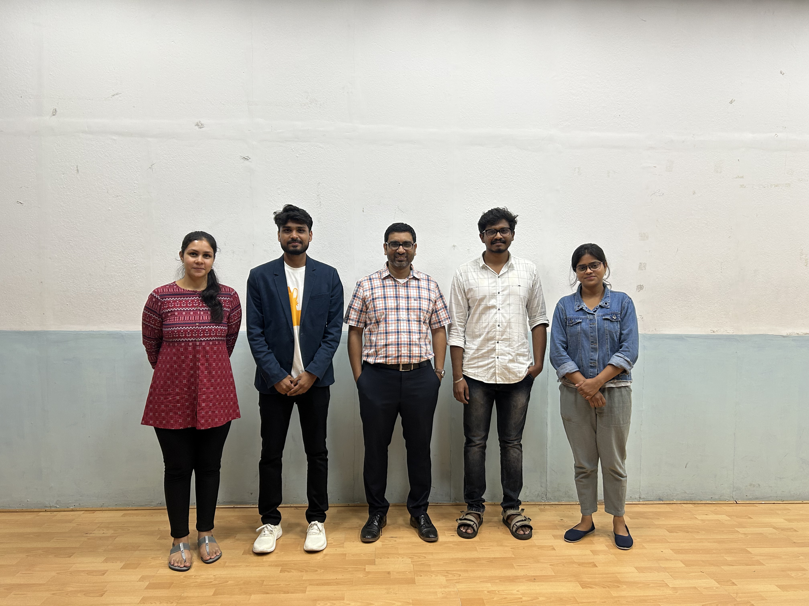
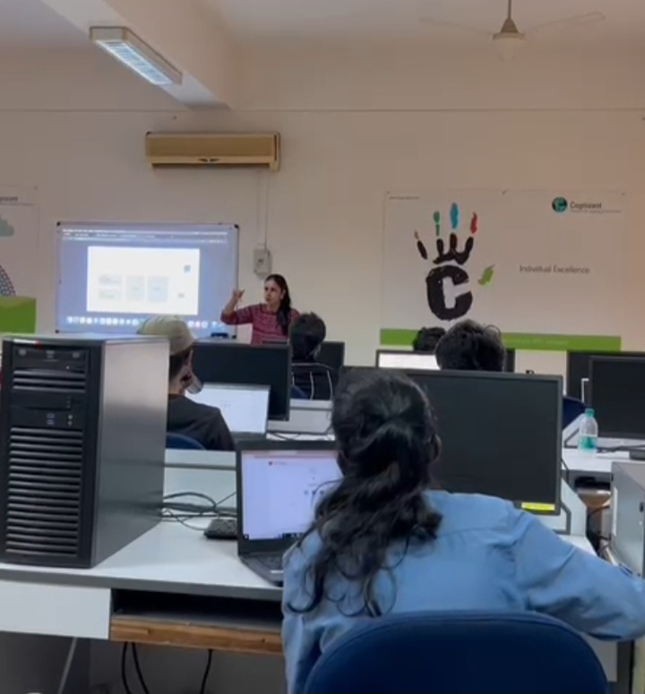
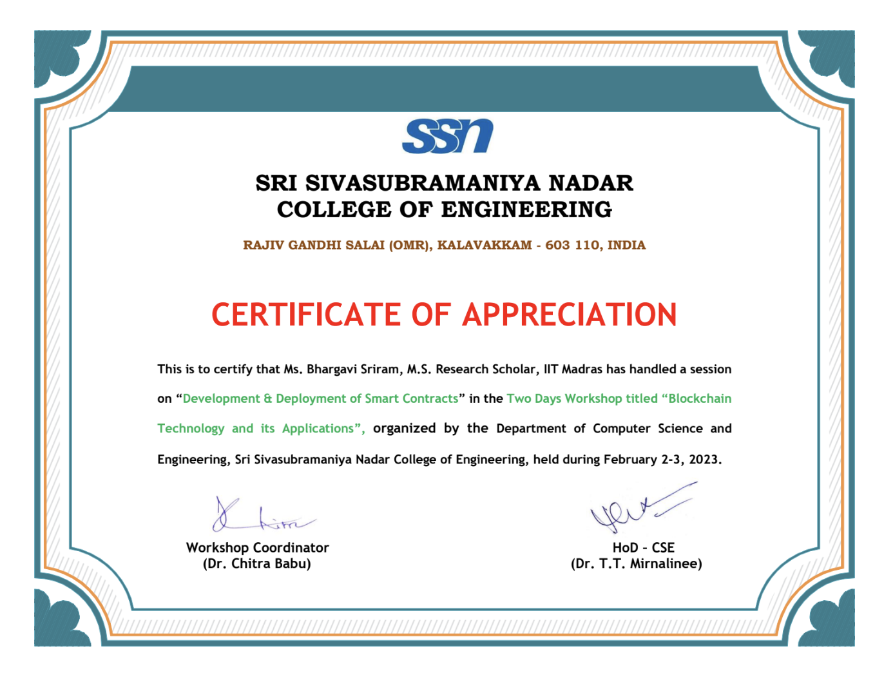

Hi, I'm
Senior Data Engineer & Data Scientist with a passion for building scalable data pipelines, cloud-native infrastructure, and intelligent ML systems that drive real-world impact.
I'm a Senior Data Engineer & Data Scientist with 7+ years of industry experience spanning Walmart Global Tech, EPAM Systems, and now Deep Sync, where I lead the AWS cloud migration of a 260MM+ U.S. consumer record platform. I hold an M.S. in Business Analytics from the University of Washington and a Masters by Research in CS&E from IIT Madras. I specialize in building scalable data pipelines, optimizing ETL workflows, and delivering cloud-native solutions using Python, SQL, Spark, Airflow, and AWS/Azure.
I'm equally passionate about the machine learning side — from engineering multi-agent agentic AI platforms with LangGraph to architecting RAG-powered LLM applications and publishing peer-reviewed research on blockchain network fairness at ICDCN 2025. I thrive at the intersection of Data Engineering and Data Science, building impactful, intelligent systems end to end.
Introduced 6 novel fairness metrics and Fair Spread Algorithms for decentralized jury selection. Published in ICDCN 2025 proceedings, ACM Digital Library.
Read the PaperPassed the AWS Certified Data Engineer – Associate exam with a score of 877/1000, demonstrating expertise in cloud data architecture and pipeline design.
View BadgeWon the Russell Investments Intercollegiate Case Competition (RIICC 2025) at the University of Washington, presenting a data-driven investment strategy.
Read the StoryFeatured
Architected a real-time Azure financial data platform using CDC (MySQL + Cassandra). Built a multi-agent agentic AI system with LangGraph and multi-LLM ETL pipelines (DeepSeek, HuggingFace, Groq), improving data access speed by 70%.
Scraped 9,000+ articles (5M+ words) using BeautifulSoup. Built a Streamlit dashboard visualizing sentiments, top companies, and author contributions.
Automated BigQuery pipeline for daily rising search terms, cutting retrieval time by 90%. Cleaned 10,000+ records/week and processed 206M+ records for trend analysis.
Built network graphs with 7M Ethereum nodes. Introduced 6 fairness metrics and Fair Spread Algorithms. Research published at ICDCN 2025 (ACM).
More Projects
AI-powered e-commerce chat assistant using a RAG framework with Snowflake Cortex Search. Processed 100+ product manuals with metadata tagging for context-aware responses.
RFM analysis + K-means clustering to identify customer segments. Recommended products to 1M+ customers using user-based and item-based collaborative filtering.
Automated Airflow pipeline for daily Spotify data ingestion, reducing manual retrieval time by 90%. Processed 206M+ records with 99% pipeline reliability.
Organized and led blockchain workshops for 150+ undergraduate and postgraduate students at IIT Madras, introducing blockchain technology and its latest advancements. Pictured below with the IITM Blockchain Club team.

Delivered a session at the two-day workshop "Blockchain Technology and its Applications" at SSN College, Chennai. Facilitated hands-on sessions using Solidity, Web3, and MetaMask.


Deep Sync · Kirkland, WA
Dell Technologies · Remote
IITM Pravartak Technologies · Sponsored by Accenture
Walmart Global Tech India
EPAM Systems
University of Washington – Michael G. Foster School of Business, Seattle, WA
Indian Institute of Technology Madras, Chennai, India
University of Delhi, Delhi, India